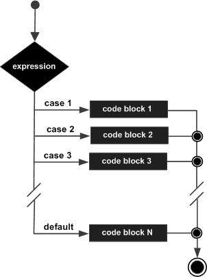

A switch statement allows a variable to be tested for equality against a list of values. Each value is called a case, and the variable being switched on is checked for each case.
The syntax for a switch statement in C++ is as follows −
switch(expression) {
case constant-expression :
statement(s);
break; //optional
case constant-expression :
statement(s);
break; //optional
// you can have any number of case statements.
default : //Optional
statement(s);
}
The following rules apply to a switch statement −
The expression used in a switch statement must have an integral or enumerated type, or be of a class type in which the class has a single conversion function to an integral or enumerated type.
You can have any number of case statements within a switch. Each case is followed by the value to be compared to and a colon.
The constant-expression for a case must be the same data type as the variable in the switch, and it must be a constant or a literal.
When the variable being switched on is equal to a case, the statements following that case will execute until a break statement is reached.
When a break statement is reached, the switch terminates, and the flow of control jumps to the next line following the switch statement.
Not every case needs to contain a break. If no break appears, the flow of control will fall through to subsequent cases until a break is reached.
A switch statement can have an optional default case, which must appear at the end of the switch. The default case can be used for performing a task when none of the cases is true. No break is needed in the default case.

#include <iostream> using namespace std; int main () { // local variable declaration: char grade = 'D'; switch(grade) { case 'A' : cout << "Excellent!" << endl; break; case 'B' : case 'C' : cout << "Well done" << endl; break; case 'D' : cout << "You passed" << endl; break; case 'F' : cout << "Better try again" << endl; break; default : cout << "Invalid grade" << endl; } cout << "Your grade is " << grade << endl; return 0; }
This would produce the following result −
You passed Your grade is D